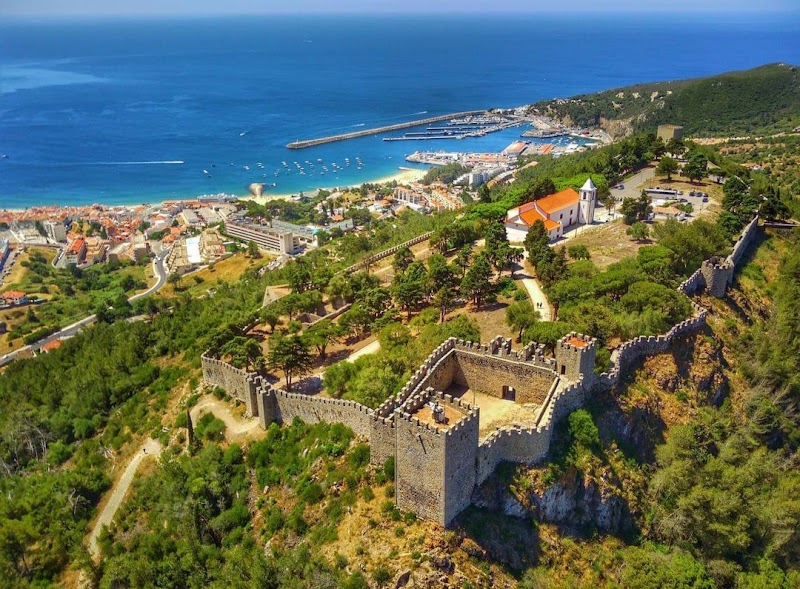
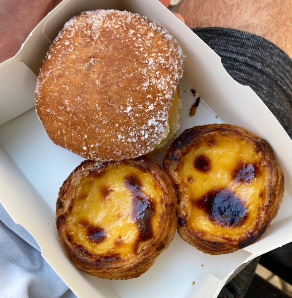
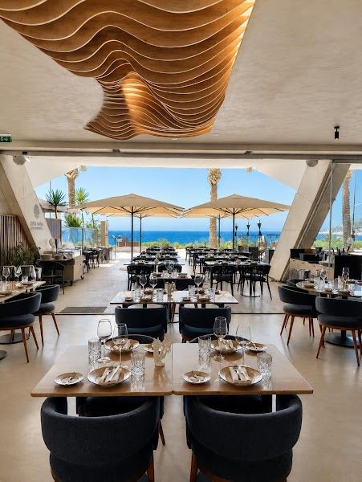
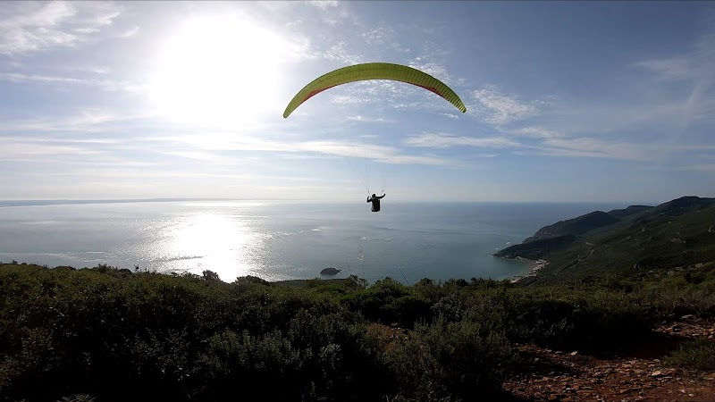
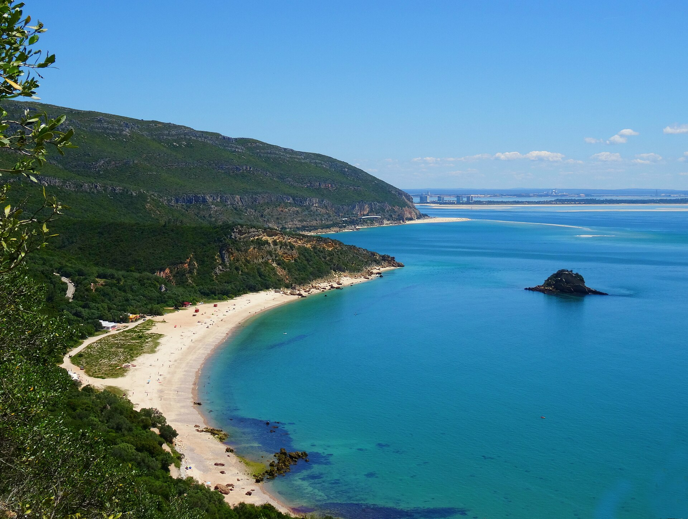
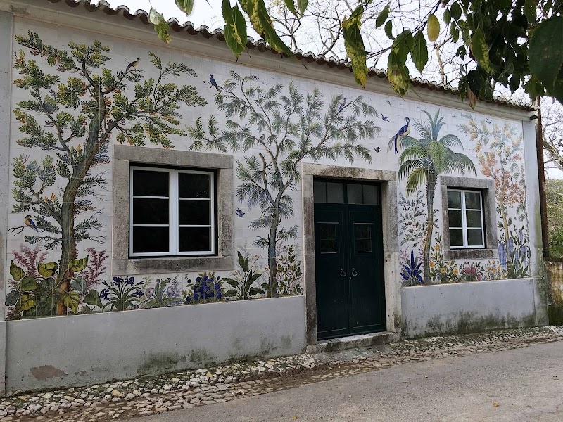
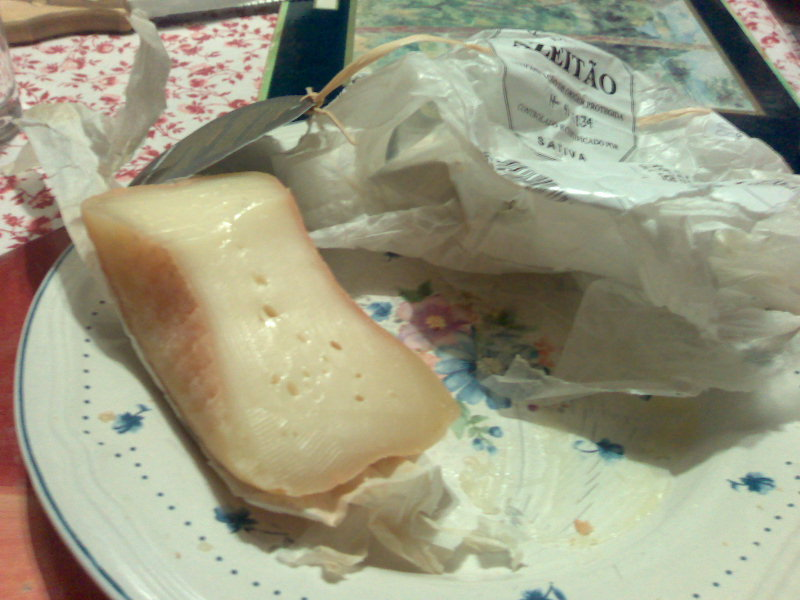
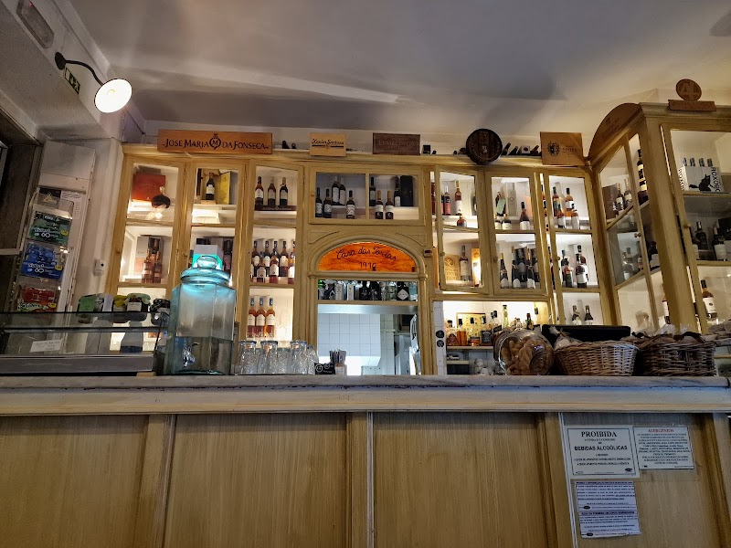

A Day on the Arrábida Peninsula
From a Moorish fort above Sesimbra, over the green spine of the Serra, to tiles and cheese in Azeitão — built around a midday pause so the day can bend to the little ones.

Coffee and something from the oven before the heat builds — then up to the fort to let everyone run. Free, unstructured, open walls high over the bay. Park outside and walk in; give it about an hour.

Down to the fishing port for whatever came off the boats this morning — the row of seafood places below the castle, with a promenade and ice-cream stands for after.

Back to base for the nap window — pool, shade, regroup. This is the natural split, too: families with the youngest can settle in and rejoin straight at dinner, while everyone else carries on for the scenic loop out to Azeitão.
The N379-1 climbs into the limestone ridge and drops toward impossibly clear water — one of the prettiest stretches of road in the country.


Into the village that gives the cheese its name, with a craft stop on the way to dinner — and the two things Azeitão is known for to carry home.


The heart of the village, on Praça da República — where locals gather and the courtyard grill runs late.

Also on this trip → Lisbon, Day 1 · Day 2